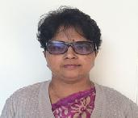

Administration
Prof. K. P. Chaudhary

Prof. K P Chaudhary did his M.Tech in Instrumentation from NIT Kurukshetra and PhD from IIT DELHI in Optical Instrumentation/Metrology. Prof K P Chaudhary initially joined CSIO Chandigarh in 1980 and worked for about fifteen years in different capacities. He has designed and developed a no-contact microprocessor based Laser Scanning Micrometer. Its know how was transferred to CEL Sahibabad for commercialization and production. In addition to this, he was also responsible for the development of various opto-electronics instruments namely Digital Laser Power Meter, Laser Communication System, Optical Viscometer etc.
In 1996, he joined National Physical Laboratory (NPL), Delhi as Senior Scientist. He has published more than 90 research papers in journals and International conferences. He has also registered 7 PATENTS to his credit and out of which six technologies have been transferred as consultancy projects. He has also been instrumental providing his technical expertise to the Indian industries as well as SAARC nations (Pakistan, Bangladesh, Bhutan, Nepal, Sri Lanka, Maldives, etc) under SAARC PTB Cooperation project as Principle Investigator of International Collaboration of SAARC cooperation project. He has visited many countries on official deputations; to name few of them are Germany, France, USA, Indonesia, UK, Bhutan, Sri Lanka, Bangladesh etc. on various capacities/assignments. He is also a reviewer of CMCs of Asia Pacific Metrology Programme (APMP) as member of Technical Committee of Length (TCL).
He has also established a 3D Coordinate Measuring Machine (CMM), 4M Laser based Length Measuring Machine (LMM), Roundness Measuring Machine etc. He has also Chaired various prestigious committees of NPL. On a role of scientific societies, he is Fellow of IETE, MSI, USI, OSI, ISI and some International groups like TC213, WGDM, and APMP TCL etc.
Since long, he is also associated with National Accreditation Board of Laboratory (NABL) and Bureau of Indian Standards (BIS) as Chairman of core / Supplementary committees and also as the Lead / Technical Assessor (NABL). He has delivered more than 100 invited talks and lectures in industries, laboratories and technical institutions. He has also guided more than 15 students of M.Tech, B.Tech, and MDS for their project works He was working as Chief Scientist and Head at NPL before joining as Director , Maharaja Surajmal Institute of Technology, New Delhi on March, 1, 2016.
Prof. Poonam Bansal
Prof. Poonam Bansal is holding the portfolio of Dy. Director in Maharaja Surajmal Institute of Technology. She has 24 years of wide and rich experience in Teaching, Industry and Research. She received her B.Tech. degree from Delhi College of Engineering, Delhi, M.Tech. and a Ph.D. Degree in Computer Science and Engineering from DCE and Guru Gobing Singh Inderprastha University, Delhi. She served the IT industry as a system executive for over eight years. She started her teaching career in 2002 as an assistant Professor in Computer Science and Engineering. She was Head of Department (Computer Science and Engineering) at MSIT during 2011 to 2015. Along with academic reponsibilites, she not only undertook various administrative duties but is also heading various committees of the institute. Prof. Poonam Bansal has published around 37 research papers in peer reviewed Journals and Conferences of National and International repute. More than 40 B.Tech. Projects were done under the guidance of Dr. Poonam Bansal . At present there are 4 students pursuing Ph.D. under her guidance. Her research has focused extensively on Speech Technology , NLP and Soft Computing . She is a Life Member of the Indian Society for Technical Education (ISTE) and the Computer Society of India. She has chaired many sessions of International Conferences. She is a reviewer of many International Journals. Since long she has been associated with IEEE, and conferred with IEEE Outstanding Branch Counselor Award of Region 10 for the year 2015.